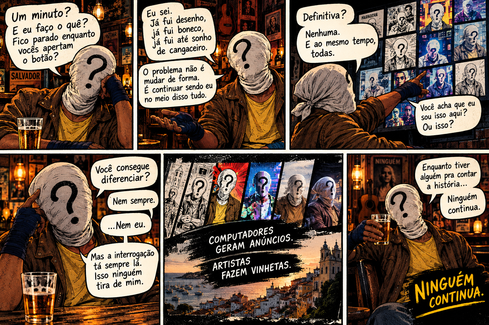

A pergunta chega à mesa
No bar, Ninguém olha para a tela e lembra das formas que já teve.
Festival Um Minuto · projeto em desenvolvimento
A forma muda. A pergunta fica. Um personagem atravessa linguagens, encontra suas próprias versões e tenta responder: o que faz alguém continuar sendo quem é?

O conceito
01 / 03“Definitiva? Nenhuma. E ao mesmo tempo, todas.”Uma pergunta entre o criador e a criatura
Em um bar cultural de Salvador, Ninguém encara as imagens de suas próprias versões.
Desenho, boneco, lembrança, quadrinho e imagem digital se alternam na tela. Em conversa com seu criador, o personagem brinca com a dúvida que sempre o acompanhou: se a aparência muda, o que é que continua?
O ponto de interrogação permanece. E, enquanto houver alguém para contar a história, Ninguém continua.
Roteiro · versão de trabalho
Estrutura preliminar adaptada do roteiro de 120 segundos. Os tempos, diálogos e a montagem podem mudar durante o desenvolvimento.
No bar, Ninguém olha para a tela e lembra das formas que já teve.
O criador pergunta qual seria a forma definitiva. A resposta: nenhuma — e todas.
As versões se multiplicam. Até o próprio personagem hesita diante delas.
Uma montagem conecta papel, desenho, animação, imagem digital e presença.
A conversa se fecha no bar. A história fica aberta para quem vier contá-la.
A ideia que atravessa o filme
Ninguém: da página ao mundo imagina o personagem atravessando diferentes linguagens sem perder o que o torna reconhecível. A interrogação não é só uma marca visual: é parte do mistério, do humor e da identidade do herói.
O projeto propõe uma homenagem autoral ao personagem criado por Augusto Matos Pereira e à memória de quem continua contando suas histórias. O roteiro e o storyboard são materiais de trabalho; a abordagem final, as artes, os diálogos e os créditos seguem em desenvolvimento.
PersonagemNinguém, criado por Augusto Matos Pereira.
Projeto audiovisual“Ninguém: da página ao mundo” · conceito e materiais em desenvolvimento.
Enquanto houver quem conte